Focus. Light a lantern.
Put your phone down, and every 25 minutes of focus lights a water lantern on your own little island. Write a few words on it, and it floats there as a memory.
Free on iPhone and iPad · no account needed
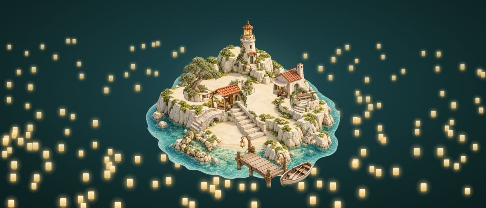
How it works
A little time away, kept for good
Choose what to pause
Pick the apps and websites that pull you away. Calls, messages and everything else stay open.
Put your phone down
Focus for 15 minutes up to 12 hours. 25, 45 and 60 minutes are one tap away.
Light a lantern
Every 25 completed minutes lights a lantern on Lantern Coast. Add a short note about the moment.
Watch the island grow
Goal days and steady weeks unlock 12 island additions, from a lantern pier to an evening beacon.
Pause only what you choose
Free in every session
Pausing apps is free every time, with no limit. And you’re never locked out.
- “Need access?” is always on screen. Nothing you’ve already earned is lost.
- Your choices stay with Apple. Away Isles uses Screen Time and can’t see which apps you picked.
- Rest mode pauses island care for holidays, illness or exams.
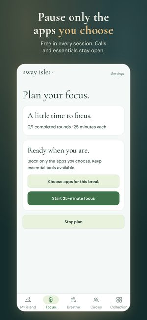
A lantern for every memory
Look back on the days you made count
- Lantern notes. Up to 80 characters on any lantern you’ve lit. Tap it later to read it again.
- Year in lanterns shows every goal day, month by month.
- Wildlife visits as you keep going, and long focus days can turn up rare finds.
- Day, dusk and night follow your own sky.
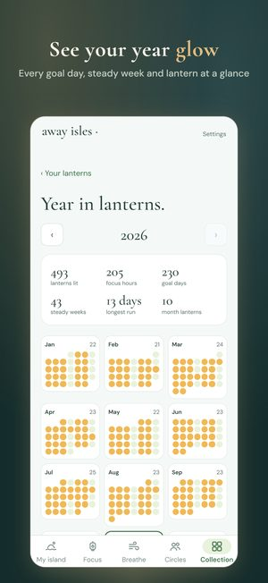
Circles
Focus together
Invite up to 8 friends or family members to a private circle.
- Team goals: everyone completes their own focus minutes toward a shared goal.
- Boost challenges: one person focuses while another cheers them on.
- Send small lanterns with a kind note.
- Invite-only. No public feed and no strangers. Reporting and blocking are built in.
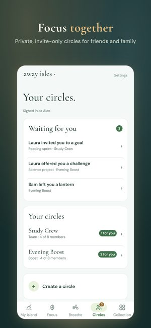
See it on iPhone
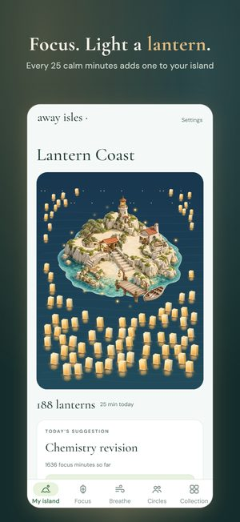
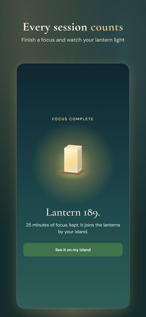
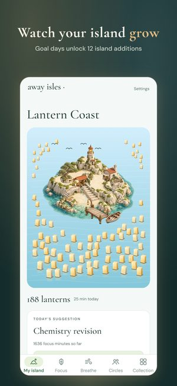
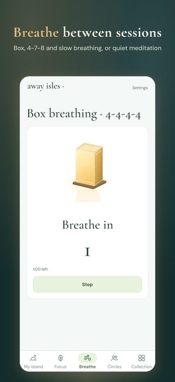
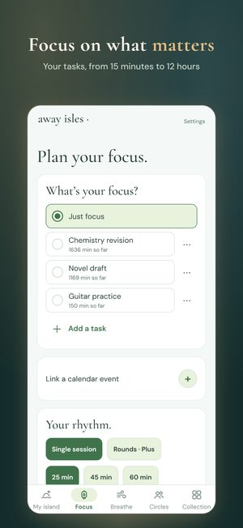
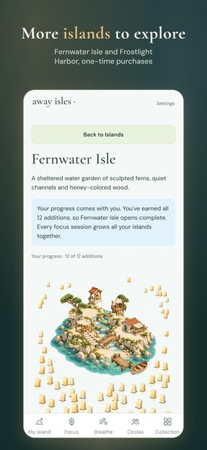
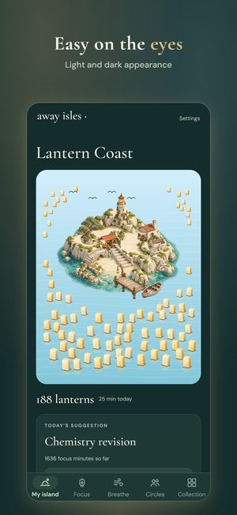
More islands
Three islands, one habit
Every island grows from the same focus, so your progress comes with you. Lantern Coast is free. Fernwater Isle and Frostlight Harbor are optional one-time purchases that are yours to keep.
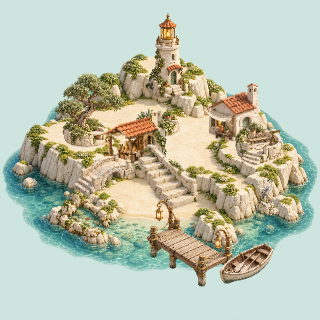
Lantern Coast
Limestone, olive trees and a lighthouse. Included.
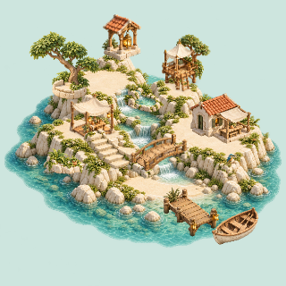
Fernwater Isle
A sheltered garden of ferns and quiet channels. One-time purchase.
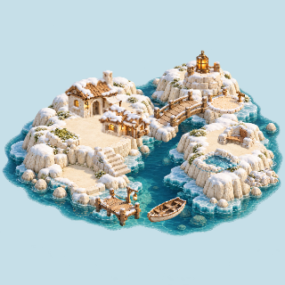
Frostlight Harbor
A snowy harbor with a lantern cabin. One-time purchase.
Free to use. Plus if you want more.
Every focus session, app pausing, lantern and lantern note, island addition, Breathe, reminders and joining Circles are free.
Free
Away Isles
- Unlimited focus sessions and app pausing
- Lanterns, notes and all 12 island additions
- Breathe and meditation timers
- Reminders, and joining Circles
Optional, monthly or yearly
Away Isles Plus
- Focus-and-rest rounds and saved quick times
- Calendar planning with event reminders
- Home Screen and Lock Screen widgets
- Local weather on your island, plus extra lantern papers, monthly designs and keepsakes
- Creating new Circle goals and challenges
Your local price is shown in the App Store before you buy. Manage or cancel Plus any time in your Apple Account settings. See the Terms of Use.
Calm by design
No account needed
Focus, your island, lanterns, Breathe and reminders all work without one. You only need an account for Circles.
Your history stays with you
Your focus history stays on your iPhone or iPad.
No ads
Nothing to scroll and nothing pulling you back in.
Breathe
Box breathing, 4-7-8 and slow breathing for 1, 3 or 5 minutes, or a quiet meditation timer.